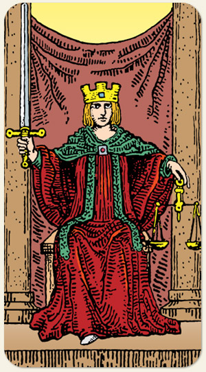

A equidade, a verdade e a integridade. Ela nos lembra que a realidade é um espelho das nossas decisões passadas. É a busca pelo equilíbrio racional, onde o julgamento é feito sem o viés da emoção, baseando-se estritamente nos fatos e na ética.
Direitos e deveres, concreto e abstrato, razão e emoção, causa e efeito, regras e leis.
Positivo: Bons resultados, forças e proteções, direitos garantidos. Manter uma postura correta é um conselho da carta.
Negativo: Dois pesos e duas medidas, jogo viciado, injustiça, falta de imparcialidade, opressão, omissão, corrompimento. O justo que não faz nada diante da injustiça se torna injusto.
Símbolos: Espada em Riste, Balança, Trono entre Pilares, Coroa, Pano de Fundo (Roxo), Expressão Serena, Postura Frontal.
Elemento: Fogo.